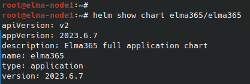

Вы можете перенести данные из баз внутри Kubernetes-кластера во внешние хранилища с помощью:
- внешних средств;
- утилиты Elma365-Backupper. Подробнее читайте в статье «Перенос данных из встроенных баз во внешние в ELMA365 Enterprise: утилита Elma365-Backupper».
Рассмотрим этапы переноса внешними средствами:
- Подготовка к созданию дампа данных.
- Создание дампа данных.
- Восстановление данных на внешнем хранилище.
- Обновление параметров приложения ELMA365 Enterprise.
начало внимание
После переноса баз данных на внешние хранилища требуется повторная активация системы.
конец внимание
Шаг 1. Подготовка к дампу данных
- Предварительно установите пакет jq.
- Для получения доступа к базам данных внутри кластера пробросьте порты сервисов:
kubectl port-forward postgres-0 5432:5432 --address 0.0.0.0
kubectl port-forward mongo-0 27017:27017 --address 0.0.0.0
- Получите и сохраните пароли для подключения к базам данных:
kubectl get secrets/elma365-db-connections -o json | jq '.data | map_values(@base64d)'
Шаг 2. Создание дампа данных
- Сформируйте файл с дампом данных для PostgreSQL с помощью утилиты pg_dump:
pg_dump -h localhost -p 5432 -U postgres elma365 -f /backup/<backup-postgresql-folder-name>
Введите пароль, полученный на первом шаге.
- Сформируйте файл с дампом данных для MongoDB с помощью утилиты mongodump:
mongodump --host localhost --port 27017 --db elma365 -u elma365 --out /backup/<backup-mongodb-folder-name>
Введите пароль, полученный на первом шаге.
Подробнее об этих утилитах читайте в статье «Резервное копирование внешними средствами».
Шаг 3. Восстановление данных на внешнем хранилище
- Восстановление из резервной копии должно производиться в пустые базы данных и S3-хранилище. Очистите их перед восстановлением.
- Восстановите данные PostgreSQL при помощи утилиты psql:
psql -h <external_db_host> -p <external_db_port> -U <username> -d <database_name> -f /backup/<backup-postgresql-folder-name>
Где:
<external_db_host>— хост внешней базы данных;<external_db_port>— порт внешней базы данных;<username>— имя пользователя внешней базы данных;<database_name>— имя базы данных на внешнем сервере.
- Восстановите данные MongoDB при помощи утилиты mongorestore:
mongorestore --host <external_db_host> --port 27017 --db <database_name> -u <username> --dir=/backup/<backup-mongodb-folder-name>
Где:
<external_db_host>— хост внешней базы данных;<username>— имя пользователя внешней базы данных;<database_name>— имя базы данных на внешнем сервере.
- Восстановите данные S3-хранилища при помощи утилиты mc:
mc alias set <alias_source> <s3-endpoint_source> <access-key_source> <secret-key_source>
mc alias set <alias_destination> <s3-endpoint_destination> <access-key_destination> <secret-key_destination>
Где:
<alias_source>— короткое имя (псевдоним) для источника;<s3-endpoint_source>— адрес S3-совместимого хранилища источника;<access-key_source>— ключ доступа для источника;<secret-key_source>— секретный ключ для источника;<alias_destination>— короткое имя (псевдоним) для назначения;<s3-endpoint_destination>— адрес S3-совместимого хранилища назначения;<access-key_destination>— ключ доступа для назначения;<secret-key_destination>— секретный ключ для назначения.
После этого скопируйте S3-хранилище из источника в место назначения:
mc cp --recursive <s3-endpoint_source>/bucket-name/ <s3-endpoint_destination>/bucket-name/
Где:
<alias_source>— короткое имя (псевдоним) для источника;<alias_destination>— короткое имя (псевдоним) для назначения;bucket-name— имя бакета;--recursive— рекурсивное копирование всех объектов и файлов.
- После восстановления баз данных на внешних хранилищах выполните повторную активацию системы.
Шаг 4. Обновление параметров приложения ELMA365 Enterprise
- После восстановления данных на внешних базах убедитесь, что все таблицы для PostgreSQL или коллекции для MongoDB перенесены корректно.
- Чтобы параметры приложения ELMA365 Enterprise указывали на настроенные внешние базы, в конфигурационном файле
values-elma365.yamlизмените параметры подключения к базам данных и параметры подключения к S3-хранилищу файлов. - Обновите параметры приложения ELMA365 c применением конфигурационного файла
values-elma365.yaml.
Обновление параметров через интернет
helm show chart elma365/elma365  Информация о версии чарта будет указана в строке
helm upgrade --install elma365 elma365/elma365 -f values-elma365.yaml --version <elma365-chart-version> --timeout=30m --wait [-n namespace] |
Обновление параметров без доступа в интернет
|
- Перезапустите все сервисы командой:
kubectl rollout restart deploy [-n namespace]
- Проверьте корректность работы платформы и остановите старые базы данных внутри Kubernetes:
kubectl scale statefulset <db-type> --replicas=0 [-n namespace]
Где <db-type> — название StatefulSet: postgres, mongo или minio.